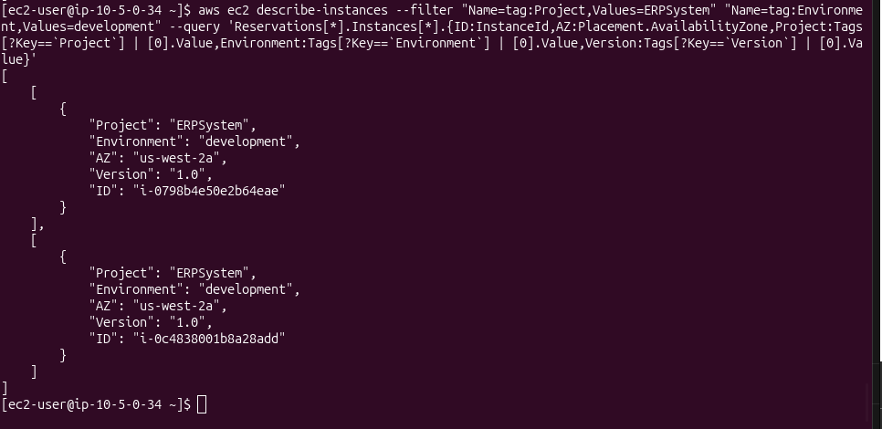
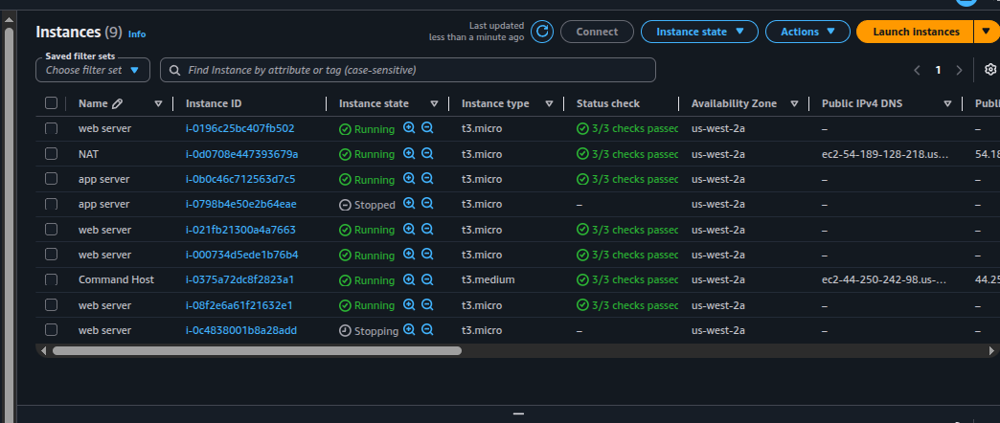
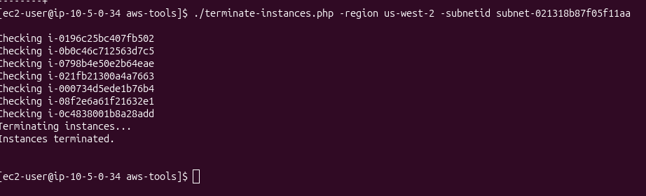

JMESPath scaling
From a single field (InstanceId) up to a multi-field projection with
aliases and tag lookup, then a double tag filter.
Inventory, modify, stop and terminate Amazon EC2 instances in bulk based on tags, using the AWS CLI with JMESPath queries and pre-provided scripts (Bash and PHP) running from a CommandHost EC2 instance. The lab also exercises a tag-or-terminate compliance policy as the optional challenge.
Connected via SSH to the CommandHost EC2 instance and used the
AWS CLI to inspect, filter and reshape EC2 metadata using JMESPath. Bumped the
Version tag on all development instances via a small Bash script, then used
stopinator.php (AWS SDK for PHP) to stop and start instances by tag. The
challenge added a tag-or-terminate policy: instances without
an Environment tag were terminated by terminate-instances.php.
From a single field (InstanceId) up to a multi-field projection with
aliases and tag lookup, then a double tag filter.
stopinator.php stops or starts every instance that matches a
tag=value filter across all regions.
Diff between "all instances in subnet" and "instances with tag X" produces the set to terminate. Same logic underpins many FinOps and governance tools.
A VPC with a CommandHost in the public subnet and 8 Linux instances in a private subnet. The private instances carry three custom tags that drive the entire lab.
| Tag | Possible values | Purpose |
|---|---|---|
Project |
ERPSystem, Experiment1 |
Which project the instance belongs to. |
Version |
1.0 (initial) |
Version of the project the instance runs. |
Environment |
development, staging, production |
Lifecycle environment. Drives stop/start and tag-or-terminate logic. |
us-west-2. All commands and scripts
are executed from the CommandHost over SSH.
Progressive JMESPath: start with raw filters, narrow output, add aliases, look up tag values, and finally apply a double tag filter. Then bulk-update a tag with a Bash script.
--querydescribe-instances output is overwhelming — most fields are not relevant for an inventory by tag.--filter filters server-side by tag; --query reshapes the JSON client-side using JMESPath.InstanceId for every instance with Project=ERPSystem.# Filter by tag and return only the instance IDs aws ec2 describe-instances \ --filter "Name=tag:Project,Values=ERPSystem" \ --query 'Reservations[*].Instances[*].InstanceId'
The JMESPath expression Reservations[*].Instances[*].InstanceId uses
wildcards to walk every reservation and every instance, projecting only that single
field.
{Alias:Field} syntax to rename fields in the output.# Project ID and Availability Zone, renamed aws ec2 describe-instances \ --filter "Name=tag:Project,Values=ERPSystem" \ --query 'Reservations[*].Instances[*].{ID:InstanceId,AZ:Placement.AvailabilityZone}'
{Key, Value} objects, so a direct projection on Tags.Project does not work.Tags[?Key==`Project`] | [0].Value filters the array to the element whose key is Project, pipes the single-element result to [0], and returns its Value.Environment and Version to build a full inventory row.# Inventory: ID, AZ, Project, Environment, Version aws ec2 describe-instances \ --filter "Name=tag:Project,Values=ERPSystem" \ --query 'Reservations[*].Instances[*].{ ID:InstanceId, AZ:Placement.AvailabilityZone, Project:Tags[?Key==`Project`] | [0].Value, Environment:Tags[?Key==`Environment`] | [0].Value, Version:Tags[?Key==`Version`] | [0].Value }'
--filter for an AND conditionName=tag:... filters in the same command performs an AND: only instances matching both tags are returned.Project=ERPSystem and Environment=development — the development boxes of the ERP system.# Double tag filter — ERPSystem dev only aws ec2 describe-instances \ --filter "Name=tag:Project,Values=ERPSystem" \ "Name=tag:Environment,Values=development" \ --query 'Reservations[*].Instances[*].{ ID:InstanceId, AZ:Placement.AvailabilityZone, Project:Tags[?Key==`Project`] | [0].Value, Environment:Tags[?Key==`Environment`] | [0].Value, Version:Tags[?Key==`Version`] | [0].Value }'

i-0798b4e50e2b64eae and i-0c4838001b8a28add), both
ERPSystem / development / Version 1.0 in us-west-2a.
Version tag with a Bash scriptchange-resource-tags.sh uses the same double-filter query but with --output text so the IDs can be piped directly into create-tags.aws ec2 create-tags either creates a new tag or overwrites an existing one — here it bumps Version from 1.0 to 1.1 on every ERP-dev instance in a single call.#!/bin/bash # Collect IDs of all ERPSystem development instances ids=$(aws ec2 describe-instances \ --filter "Name=tag:Project,Values=ERPSystem" \ "Name=tag:Environment,Values=development" \ --query 'Reservations[*].Instances[*].InstanceId' \ --output text) # Overwrite Version tag to 1.1 on every collected instance aws ec2 create-tags --resources $ids \ --tags 'Key=Version,Value=1.1'
Version 1.0 → 1.1 change ran
successfully against the lab fleet, but no before/after screenshot was captured. The
verification command from the lab guide
(aws ec2 describe-instances --filter "Name=tag:Project,Values=ERPSystem" --query '...Version:Tags[?Key==`Version`] | [0].Value')
confirms the tag flips only on the development boxes; the others remain at 1.0.
stopinator.phpA pre-provided PHP script that uses the AWS SDK for PHP to apply a stop/start lifecycle to every instance matching a tag filter, across all regions.
~/aws-tools/stopinator.php on the CommandHost.Ec2::DescribeInstances() with a tag filter, then stops every matching instance with Ec2::StopInstances().-t "Name=Value;Name=Value" — tag filter (semicolon-separated pairs). If omitted, stops every running instance in the account.-s — switch to start mode instead of stop.The script reports each region it scans and lists the identified instances before issuing the stop call:
cd ~/aws-tools ./stopinator.php -t"Project=ERPSystem;Environment=development" # Output (abbreviated): # Region is us-east-1 # No instances to stop in region # Region is us-west-2 # Identified instance i-0798b4e50e2b64eae # Identified instance i-0c4838001b8a28add # Stopping all identified instances...

Stopped / Stopping
(i-0798b4e50e2b64eae labeled "app server",
i-0c4838001b8a28add labeled "web server"). The CommandHost, NAT and
the remaining web/app servers stay Running, which matches the
expected behavior of filtering by
Project=ERPSystem;Environment=development.
-s-s flag to switch to start mode.StartInstances in place of StopInstances and the instances eventually returning to Running in the console../stopinator.php -t"Project=ERPSystem;Environment=development" -s
Policy: any instance in the private subnet without an Environment tag is
considered non-compliant and must be terminated. The provided
terminate-instances.php implements that policy as a set difference.
describeInstances() with a filter for the existence of the Environment tag (any value). IDs go into a hash table.Ec2::terminateInstances() call with the full ID list.Environment tag from two private instances (Add/Edit Tags → delete the row → Save)../terminate-instances.php -region us-west-2 \ -subnetid subnet-021318b87f05f11aa

Terminating instances... and Instances terminated. —
confirming the tag-or-terminate policy ran end-to-end.
[*] — wildcard projection over arrays of objects.{Alias:Field} — rename or reshape fields in the output.[?Key==`X`] — filter expression on array elements.| — pipe one expression into another (e.g. [?...] | [0].Value).--filter arguments combine as AND, server-side.
JSON is fine for humans reading inventories; --output text is what you want
when piping IDs into other AWS CLI calls. The change-resource-tags.sh script
is a one-liner because of that single flag — switch it back to JSON and the
create-tags --resources call breaks immediately.
stopinator.php is a toy, but the pattern it shows — sweep all regions,
filter by tag, apply a lifecycle action — is exactly what production tools like
AWS Instance Scheduler and Cloud Custodian implement.
Once tags are reliable, scheduling, right-sizing and compliance enforcement are all
variations of the same script.
The tag-or-terminate challenge is the simplest expression of a compliance policy:
compliant set (instances with required tag) minus full set
(instances in subnet) equals violation set. The same shape generalises to
"untagged volumes", "security groups without owners", "S3 buckets without a
CostCenter". The lifecycle action at the end is what varies.